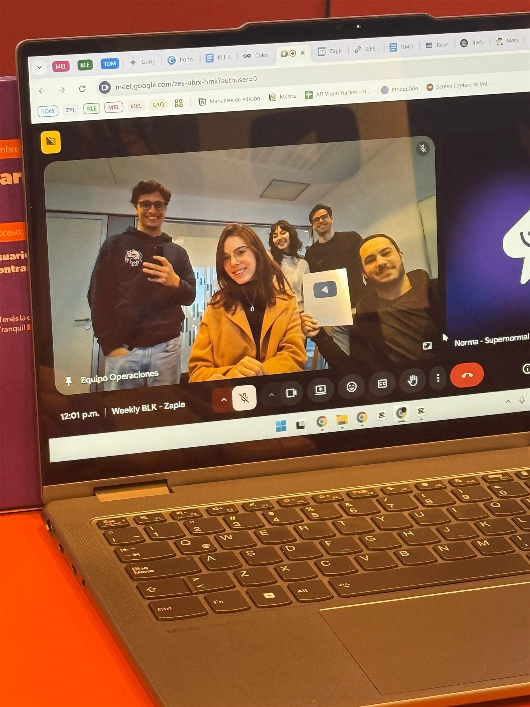

+8.4M
Santi BilinkisInstagram Reels
- Arranca atacando un miedo común
- Se apalanca en una figura conocida
- Datos impactantes en el desarrollo

HablemosConvertimos tus podcasts, charlas y entrevistas en shorts que el algoritmo empuja y la gente comparte.
+254M de views generadas para nuestros clientes
Cómo trabajamos
Vemos el episodio completo y marcamos cada momento con potencial de explotar.
Desde el hook hasta los cambios más finos en la estructura interna de tu discurso, para que quede coherente, con buen ritmo y sin interrupciones de la lógica discursiva.
Cortes, subtítulos, música y zooms con una estética prolija, pensados para que nadie se vaya antes del final.
Resultados
views generadas para nuestros clientes. Detrás de cada una hay una decisión de edición.
Voces
Nosotros
Somos un equipo cordobés de editores y analistas de video con un solo objetivo: que las ideas valiosas lleguen a millones de personas. Hace más de tres años que hackeamos el algoritmo y le damos forma al contenido corto que ves todos los días.

Cada frame importa.
Entendemos qué hace que un video funcione.
Detalles que se notan sin que se vean.
Destacar entre tanto ruido.
Trabajar con nosotros es simple y se disfruta. Somos parte de tu equipo, no un proveedor más.
Contacto
Speakers, consultores y referentes: escribinos y te contamos cómo podemos potenciar tu voz.